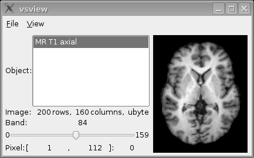
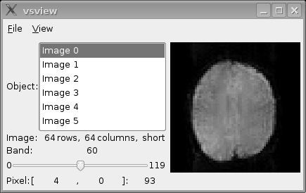
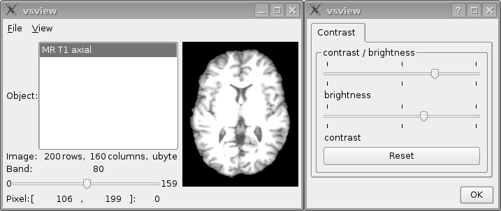
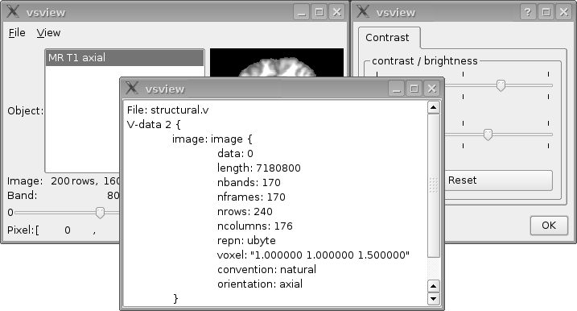

The program 'vsview' is a simple viewer to display anatomical and functional data in Lipsia. The main window shows the list of all objects in the input file on the left and the data of the selected object on the right. You can scroll through the bands of an object using the slider and read out the raw voxel coordinates and the raw value of a single voxel when you move the cursor over the voxel.
When anatomical data are displayed with 'vsview', you can show the different slices by scrolling through the different bands using the slider in the left bottom side of the main window (see image below).
When functional data are displayed with 'vsview', the different slices appear as different objects in the list on the left side of the main window. A slice can be selected by clicking to an object in this list. You can visualize the different functional scans (timesteps) by scrolling through the different bands using the slider in the left bottom side of the main window. Using this function, you can scroll through all fucntional images of a selected slice. This is e.g. useful to detect motion of the subject during the functional session.
'vsview' also offers a dialogue in order to adjust the brightness and the contrast of the display. You can open the dialogue window by pressing Ctrl+P or going via the menue of the main window.
You can also take a look at the textual attributes of the input file in a different window using Ctrl+A or going via the menue on the top.
